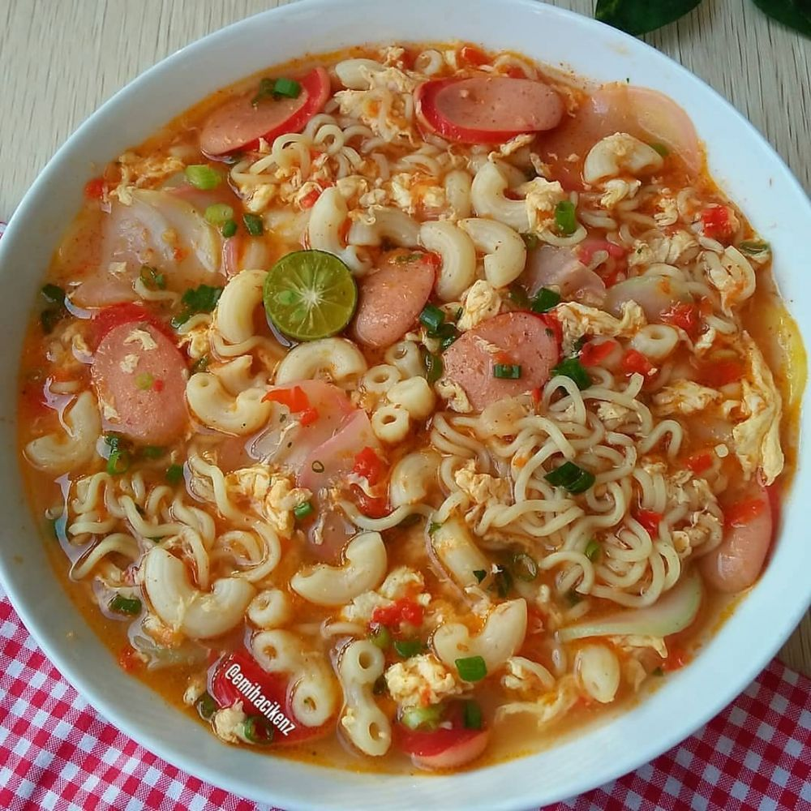

Indomie Seblak Macaroni

foto: Instagram/@semuaresepada
Bahan-bahan
1 bungkus Indomie (mi rasa ayam bawang) rebus
30 gram macaroni rebus tiriskan
sedikit kerupuk bawang mentah rendam air panas hingga empuk beri sedikit minyak supaya tidak lengket
secukupnya daun bawang iris
1 buah sosis iris
1 buah telur kocok lepas
2 gelas air
sedikit garam, gula dan bumbu indomi
Bumbu Halus
3 bawang merah
2 bawang putih
5 cabai merah keriting
3 rawit atau sesuai selera
1 cm kencur
Cara Membuat